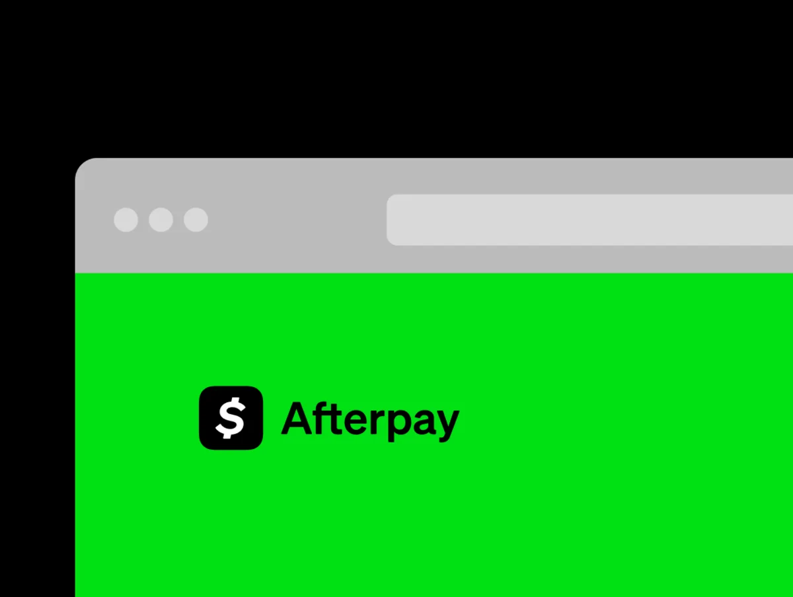
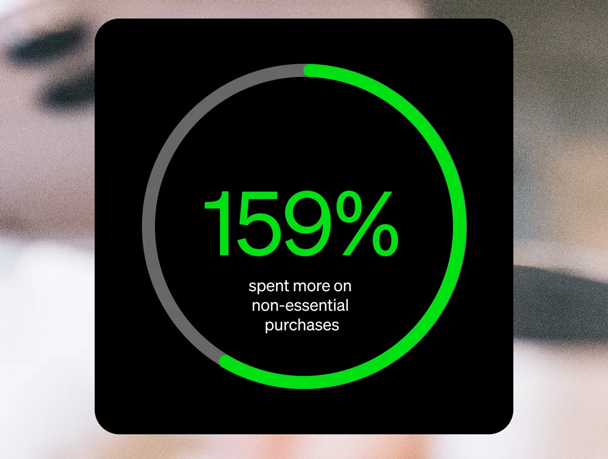
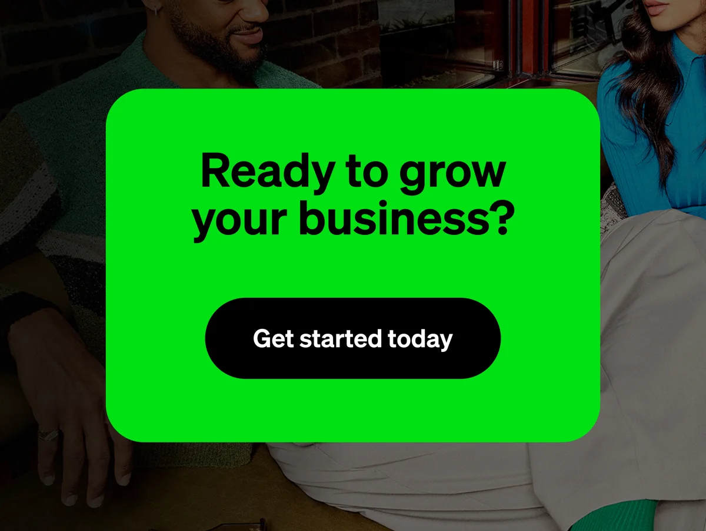



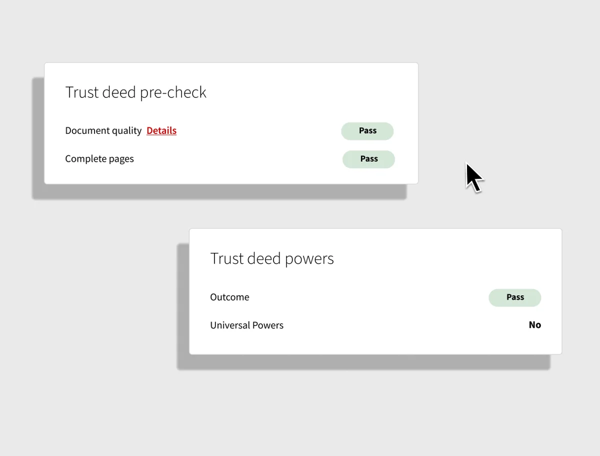
How might we speed up the trust deed review process for paralegals?
How might institutions safely explore alternative forms of currency?
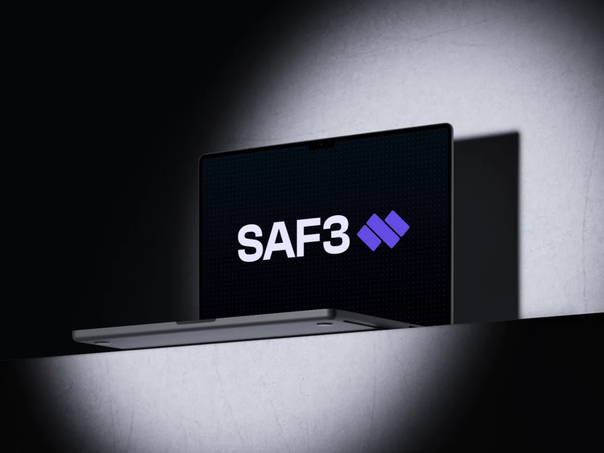
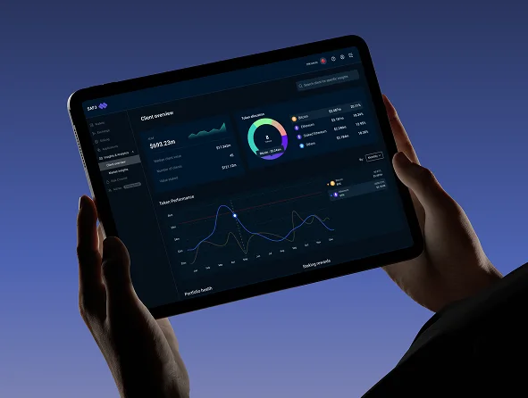
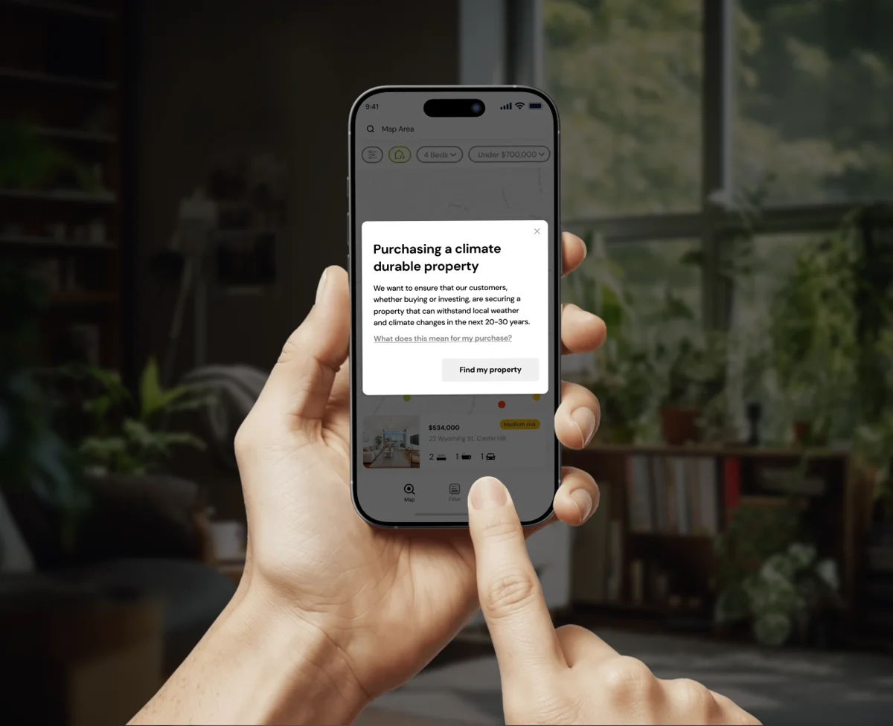
How might we solve for the effects of climate on our property market in the next 100 years?
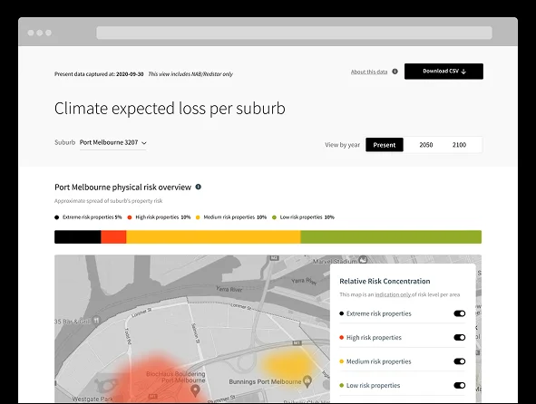
How might we improve the daily experience of Victorian commuters?
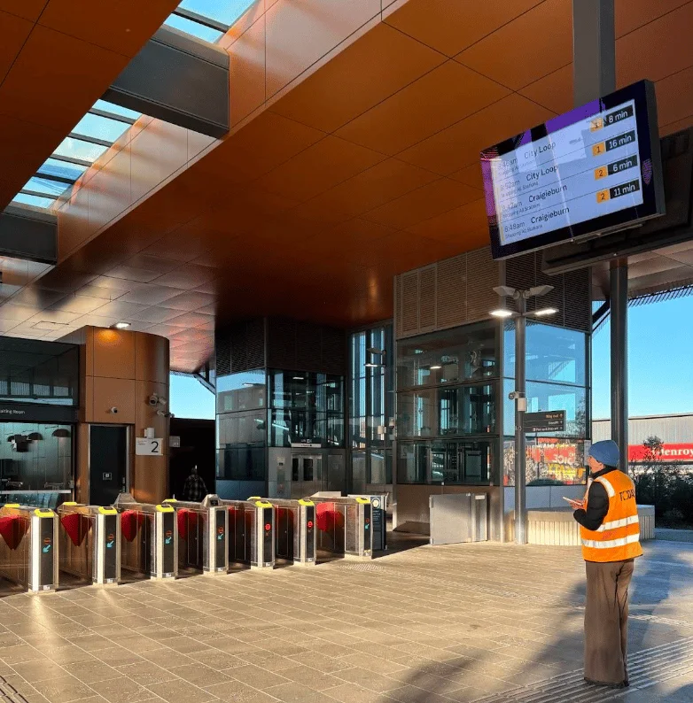
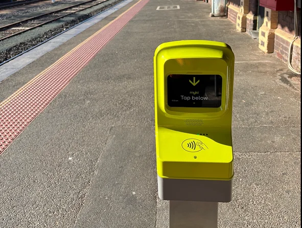
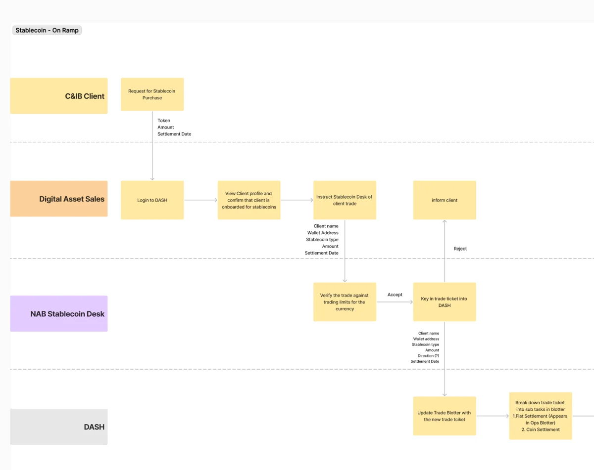
How might we enable cheaper and faster international transactions for NAB’s institutional customers?
How might we create value for service workers and a fun experience for patrons?
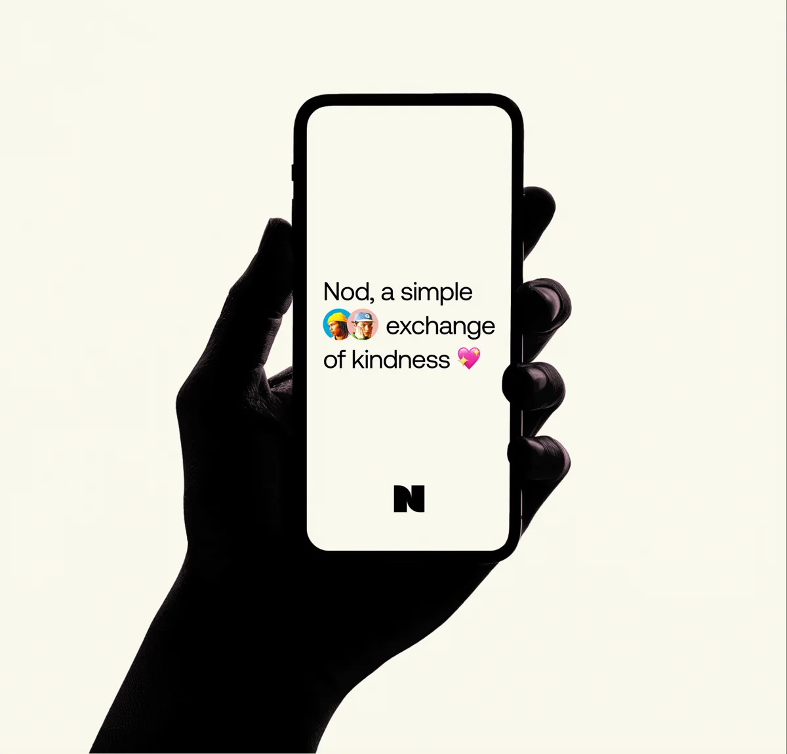
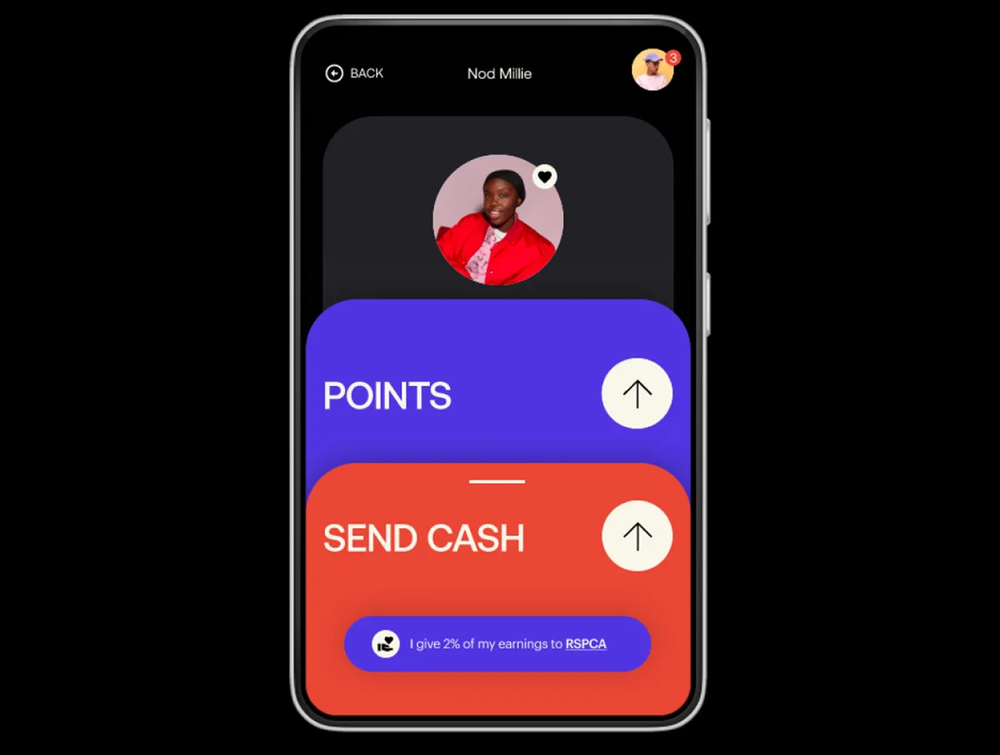